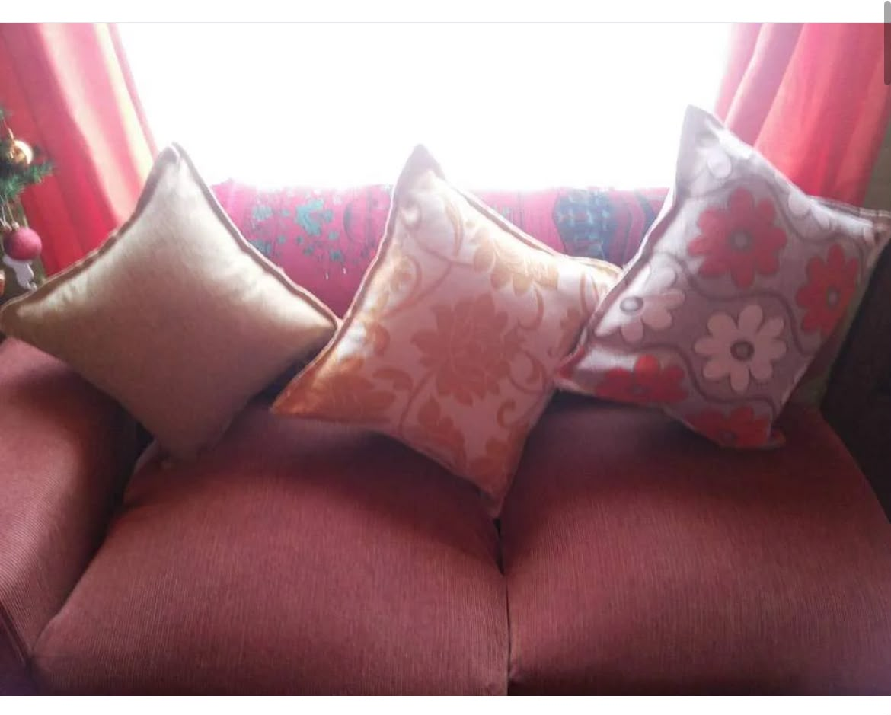
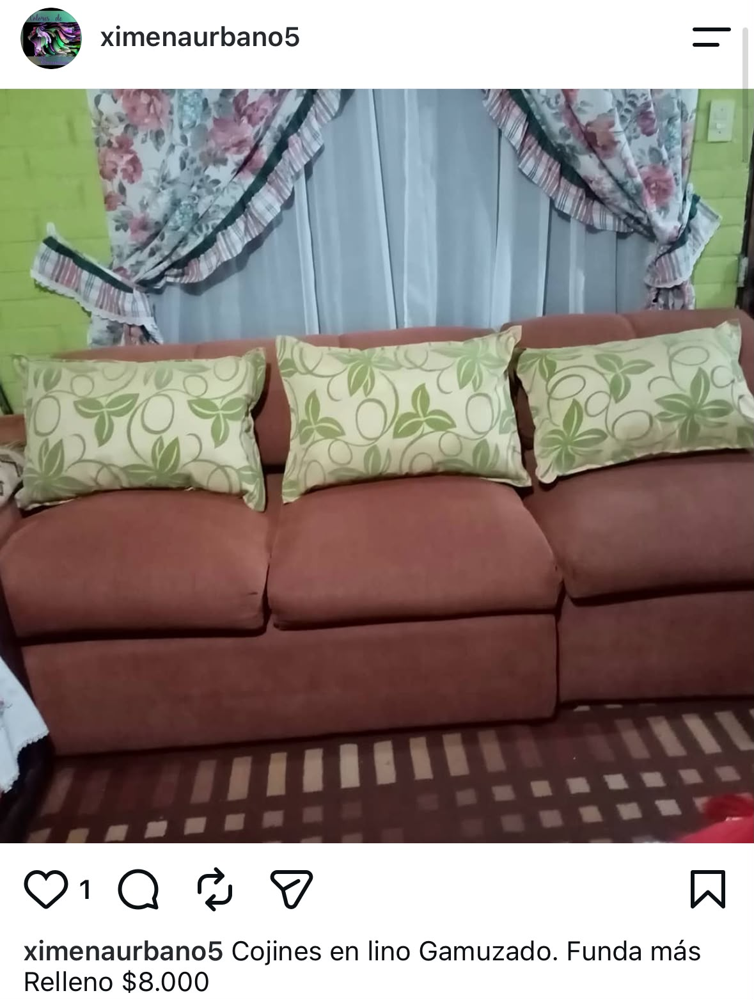
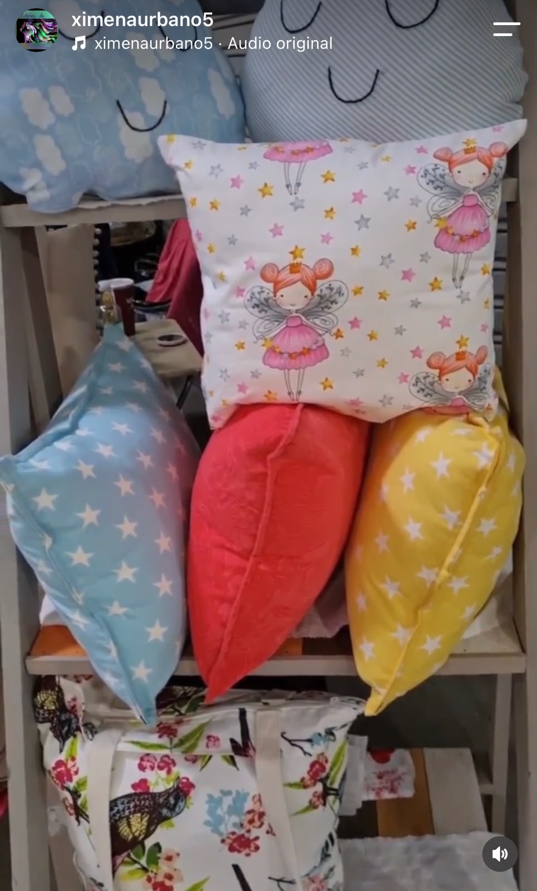
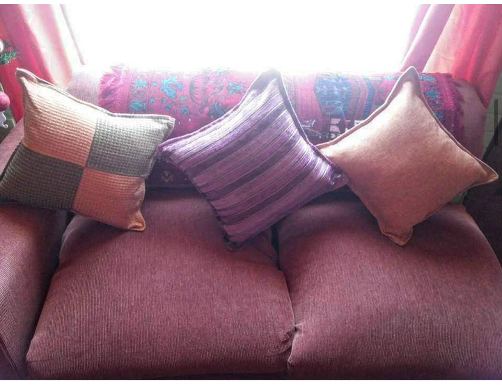
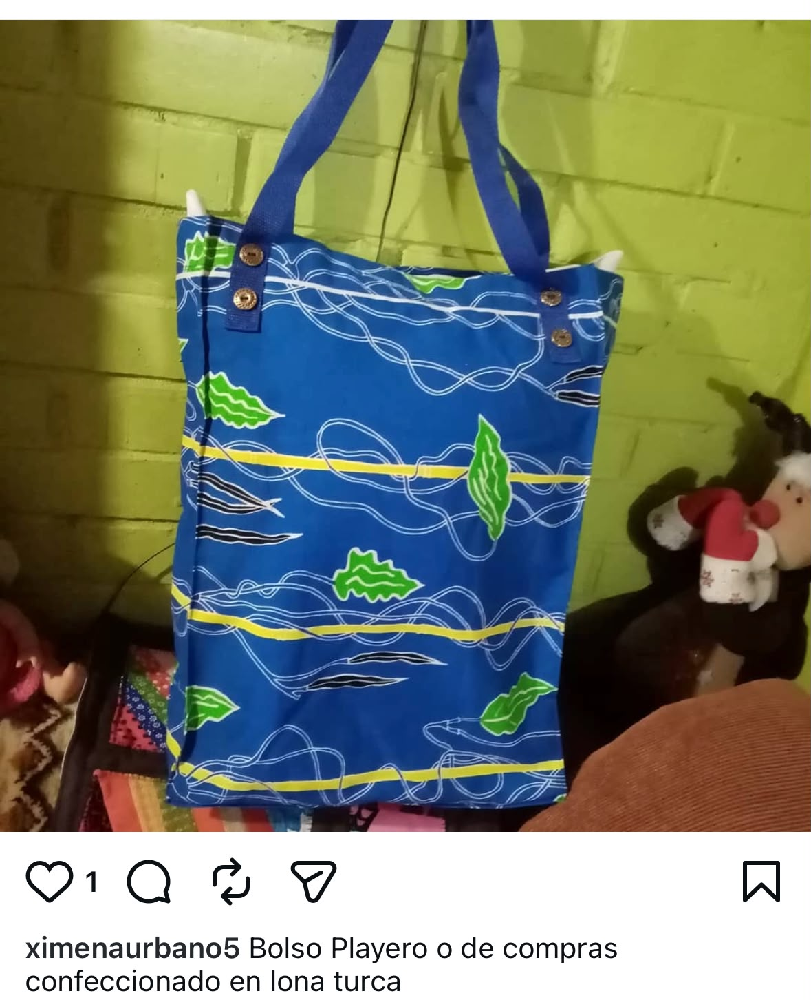
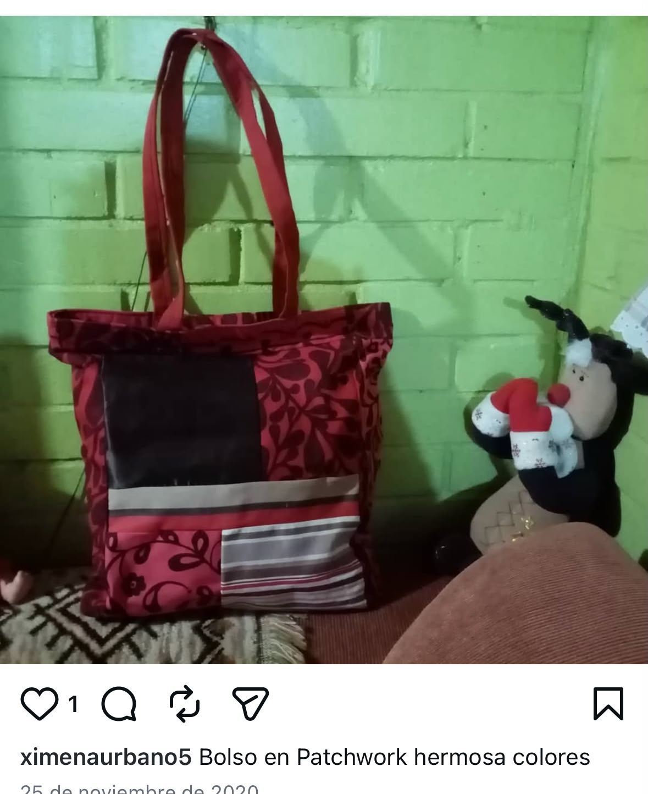
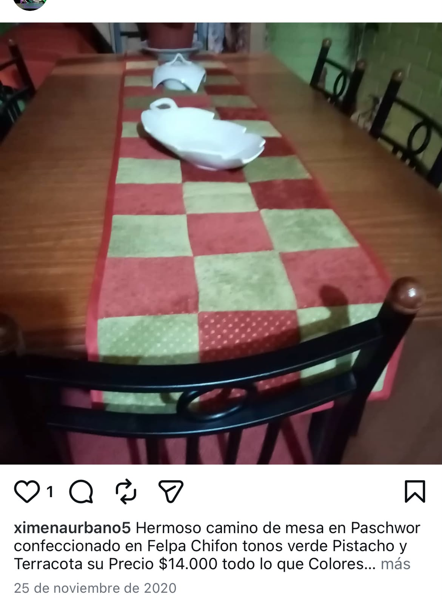
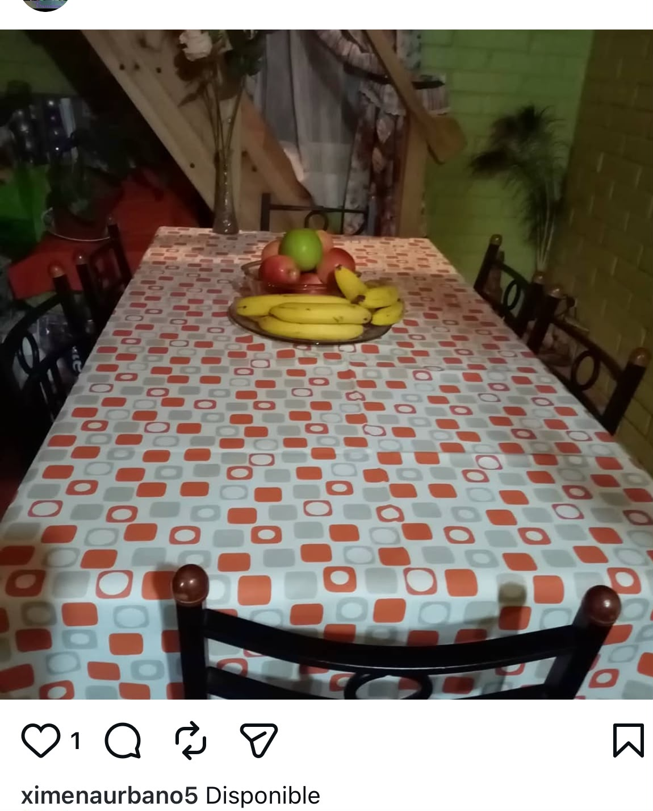

Artesanía textil · Melipilla, Chile
Cojines, bolsos y textiles del hogar tejidos con amor en el corazón de la Región Metropolitana. Trece años de oficio artesanal.
Colores de Ensueño nació en Melipilla de la mano de Ximena Urbano, artesana con más de 13 años de trayectoria en la creación textil. Cada bolso, cojín y camino de mesa sale de sus manos con la misma dedicación con la que inició este camino: transformar telas en objetos que duran y que emocionan.
El nuestro es un trabajo de comunidad. Ximena comparte el oficio junto a otros artesanos y artesanas, recorriendo ferias donde se celebra lo hecho a mano. Ese espíritu de colaboración y respeto por el trabajo artesanal se refleja en cada pieza.
Si buscas algo único, con historia y con cariño, estás en el lugar indicado.
"Cada puntada es intencional. Cada color tiene una razón de ser."
Trabajamos principalmente con lona turca, lino gamuzado y técnica patchwork, materiales elegidos por su durabilidad y capacidad de retener el color. Cada pieza está pensada para acompañarte muchos años.








Las ferias son nuestro hogar. Ahí es donde el trabajo artesanal cobra vida, donde puedes tocar las telas, ver los colores de cerca y conversar con quienes hacemos cada pieza. Ximena recorre las ferias junto a una comunidad de artesanos que comparte la misma pasión por lo hecho a mano.
Encuentra los últimos trabajos, fechas de ferias y novedades en @ximenaurbano5
Ver en Instagram →